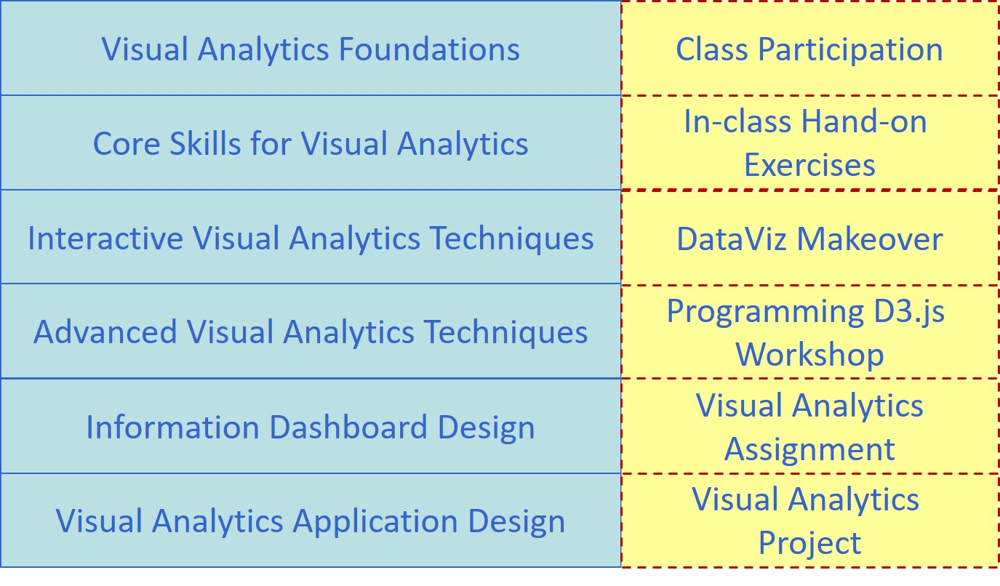

Syllabus
Synopsis
Data analysis and communications can be fun! With visual analytics techniques and tools, everyday data analysts from various disciplines such business, economic, sociology, political science and public policy can now synthesize information and derive insight from massive, dynamic, ambiguous, and often conflicting data without having to deal with complex statistical formulas and programming. Many companies and organization took notice when Gartner cited visual analytics as one of the top five trends transforming business intelligence.
In this course, students learn how to use data visualization and interactive analytic tools and techniques to interact with data of different formats from various sources, explore the expected relationships and discover unexpected correlations and patterns. You will also acquire the skills for building cutting edge visual analytics application based on principles and best practices from graphic design, visual arts, perceptual psychology, cognitive science and interfaces design.
Learning Objectives
Upon successful completion of the course, students will be able to:
- Understand the basic concepts, theories and methodologies of Visual Analytics.
- Analyse data using appropriate visual thinking and visual analytics techniques.
- Present data using appropriate visual communication and graphical methods.
- Design and implement cutting-edge Visual Analytics system for supporting decision making.
Course Learning Outcomes
Explaining the concepts and principles of Visual Analytics.
Describing the differences between Visual Analytics, Data Visualisation, Statistical Graphs
Explaining the basic concept of visual variables and applying these concepts and best practice static
Explaining interactive techniques and best practice, and applying these techniques in designing interactive data visualisation.
Understanding the data characteristics of numerical data and building data visualisation by using appropriate univariate graphical methods.
Understanding the characteristics of multivariate data and building data visualisation by using appropriate multivariate visualisation methods.
Understanding the characteristics of time-series data and building data visualisation by using appropriate time-series visualisation methods.
Understanding the characteristics of geographical data and building data visualisation by using appropriate geo-visualisation methods.
Understanding the characteristics of network data and building data visualisation by using appropriate network graph visualisation methods.
Explain the concepts and principles of Information Dashboard.
Building business dashboard by using Commercial off-the-shelf (COTS) software.
Designing visual analytics application programmatically by using free and open source software and packages.
Course structure
Basic Modules
This course comprises ten integrated components as shown below:

Pre-requisites
There are no formal prerequisites for this course. Students are, however, expected to commit adequate time to gaining in-depth hands-on experience with Tableau beyond introductory use, and to developing data visualisations that are both insightful and functionally effective.
Course Assessment
The assessment of this course consists of four major components, namely: class participation, individual assignment, DataViz Makeover, visual analytics project. There will be no mid-term test or final examination for this course.
Class Participation
A strict requirement for each class meeting is to complete the assigned readings before coming to class. Readings will be provided from the textbook on technical information and from provided documents and articles on business applications of Visual Analytics. Students are required to review the recommended readings. Without preparation, the learning and discussions would not be as meaningful. Student sharing of insights from readings in class participation will form a large part of the learning in this course.
Practice makes perfect. To help students develop strong hands-on skills in designing elegant and functional data visualisations using Tableau, during lesson, students are required to complete a series of in-class exercises using Tableau. The in-class discussion will focus on how to critic existing data visualisation and how to deliver effective visual communication. In general, these exercises are guided interactively. By the end of each lesson, students are required to publish their in-class exercise on Tableau Public.
Class Test
There will be two Timed Individual Assessment in the form of DataVis Makeover exercises in this course. In each exercise, one or two data visualisations will be provided. Students are required to critique the original visualisation, propose specific improvements, and redesign the visualisation accordingly. This may involve retelling the original story more effectively or uncovering a new and meaningful story within the data.
The objective of the makeover is to improve upon the original visualisation. Students should clearly articulate what works, what does not work, why certain design choices are ineffective, and how the revised design addresses these issues. Wherever possible, students should work within the fields of the provided dataset. However, if supplementing the data enables a clearer or more compelling narrative, this is encouraged.
You are required to upload the makeover onto the dropbox of e-Learn (i.e. LMS) by the end of the assessment time.
Individual Assignments
There will be two assignments that are due throughout the term. Students may work together to help one another with computer or Visual Analytics issues and discuss the materials that constitute the assignment. However, each student is required to prepare and submit the assignment (including any computer work) on their own. Cheating is strictly forbidden. Cheating includes but not limited to: plagiarism and submission of work that is not the student’s own.
Students are required to edit their assignment onto the coursework website. The submission should provide a detail and accuracy descriptions of the methodology and data visualisation techniques used, and the findings of the analysis. The assignment artifact due, on the other hands, is to be uploaded into the Assignment Dropbox strictly before the official due dates. Late work, will be severely penalised. Students must check and confirm on Wiki the assignment due dates.
Visual Analytics Project
The purpose of the project is to provide students first hand experience on collecting, processing and analysing large business data using real world data. A project may involve developing new methods or implementing visual analytics system to support analytic tasks in specific domains. Alternatively, a project may be in the form of application development by integrating analytical tools within a visual analytics environment. Students are encouraged to focus on research topics that are relevant to their field of study. It should address a concrete visual analytics problem and should propose a novel and creative solution.
For more details please refer to Visual Analytics Project page
Grading Summary
The grading distribution of this course are as follows:
| Component | Weights |
|---|---|
| Class Participation | 10% |
| Individual Assignments | 40% |
| Class Tests | 10% |
| Visual Analytics Project | 40% |
There will be final examination for this course.
Core Readings
Claus. O. Wilke (2019) Fundamentals of Data Visualisation, O’Reilly. USA
Cairo, Alberto (2013) The Functional Art: An Introduction to Information Graphics and Visualization, New Riders, Berkeley, CA. This book is available at SMU eLibrary.
Few, Stephen (2004) Show Me the Numbers: Designing Tables and Graphs to Enlighten, Analytics Press, Oakland, USA.
Few, Stephen (2009) Now You See It: Simple Visualization Techniques for Quantitative Analysis, Analytics Press, Oakland, USA.